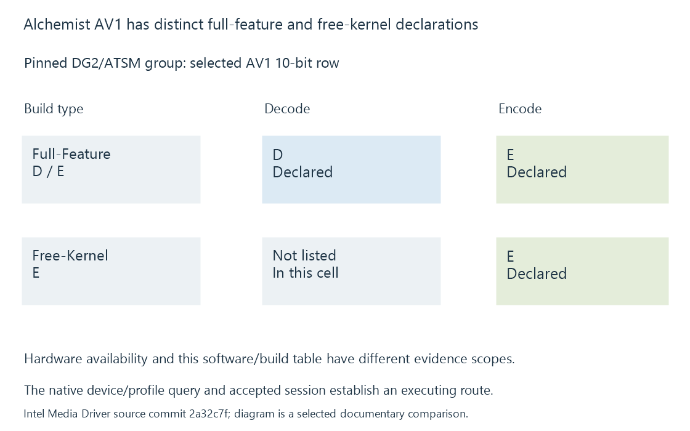

Intel Arc Alchemist media capabilities
Arc Alchemist’s documented media implementation adds AV1 encoding alongside supported decoding, with source/target formats and driver build determining the usable route.
Arc Alchemist is important for Intel media workloads because its documented path includes AV1 encoding as well as decoding. The selected source can therefore differ from the target codec while each operation uses an appropriate media capability.
Intel Media Driver places Alchemist in its DG2/ATSM group.
Preserve the direction and build declaration
Selected pinned entries are:
| Configuration row | Full-Feature | Free-Kernel |
|---|---|---|
| AVC | D/E | D/E |
| HEVC 10-bit | D/E | D/E |
| HEVC 10-bit 4:2:2 | D/E | D/E |
| AV1 10-bit | D/E | E |
The AV1 Full-Feature cell contains both directions. The Free-Kernel cell in this snapshot supplies E rather than the same complete D/E declaration.
Intel's separate Arc A-Series hardware reference lists AV1 8/10-bit, 4:2:0 decode support. The hardware reference and implementation-build table answer related but different questions.

New output encoding changes the representation choice
In an original conversion exercise, a HEVC Main 10 source can be decoded and prepared for AV1 output through compatible selected operations. Alternatively, an AV1 source can be prepared for H.264 output.
Those examples require different source and target queries. They do not mean that an existing compressed segment can switch codec by changing its label.
The receiving client still needs the chosen output format. An Emby server offering AV1 output to a client without a usable AV1 playback path has not established end-to-end compatibility.
Processing and resources remain separate requirements
A decode/encode declaration does not add every desired scaling, tone-mapping or subtitle route. The selected filters need compatible pictures and completion relationships between the stages.
A discrete adapter can also introduce transfer costs if the application uses CPU-side processing or another adapter's resources.
The actual frame route, output dimensions and source properties determine the workload. An advertised engine or codec entry does not give a fixed number of complete 4K sessions.
Query the installed implementation
The application needs a compatible runtime/driver and integration for the selected operation. A build-dependent AV1 row illustrates why those details should be retained alongside the product identity.
See Also
- Intel Xe-LP media capabilities
- Intel Xe-LPG media capabilities: Meteor Lake and Arrow Lake
- Intel Xe2 media capabilities: Lunar Lake and Battlemage
- Intel Quick Sync Video (QSV)
- Concurrent encoder sessions, policy and capacity
- How to read a hardware codec support matrix